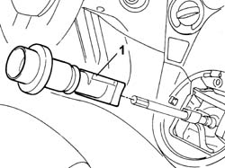

2125C18 reverse inhibitor - replace
- Path
- Procedures > 21 GEARBOX UNIT > 2125 MANUAL GEARBOX EXTERNAL CONTROLS > 2125C MANUAL GEARBOX EXTERNAL CONTROL (CABLES) > 2125C18 reverse inhibitor - replace
- Kind
- repair procedure (removal / refitting; the operation number is the code)
- Applies to
- all engines; all production periods
- Interactive page
- https://sloeber94.github.io/elrnDB-fPnd/en/#/2752666
Applies to: all engines; all production periods
 Removing
Removing
 Refitting
Refitting2125C24 gear lever knob - r + r
2125C02 gear control lever outer gaiter r r
1. Remove the reverse gear inhibitor.

Applies to: all engines; all production periods
Refitting
RemovingPlace the reverse gear inhibitor in position.